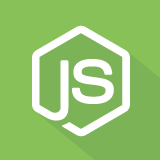

Node.jsNode.js is an open-source, cross-platform JavaScript run-time environment that executes JavaScript code server-side.
5 quêtes
- Node 01 - 👩🏫 Introduction à Node.js et npm 6 images
- Node 02 - 🛰️ Utiliser un fichier .env 4 images
- Node 03 - 👨🏻🚀 Commence à linter et à formater ton code en utilisant Biome 1 image
- Node 04 - 🔧 Rechercher et choisir un paquet npm (ou pas !) 5 images
- Node 05 - 🚀 Concepts avancés et alternatives à la CLI de npm 2 images